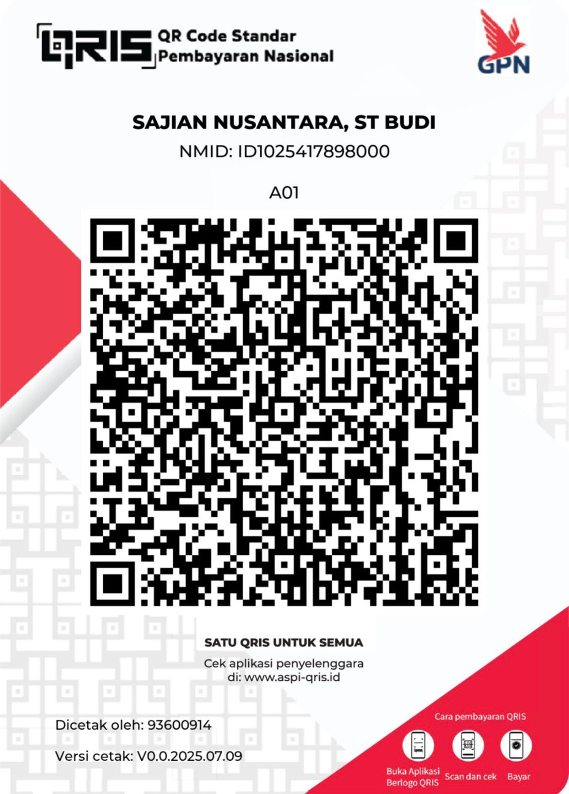

Pilih permainan serumu!
Hai Ayah/Bunda! Terima kasih sudah menemani anak-anak bermain. Dukungan kecil Anda sangat berarti bagi kami untuk terus membuat game edukasi yang bermanfaat.
Silakan scan QRIS di bawah ini:

Atau Transfer ke:
Bank BCA a.n. Enggar Ranu Hariawan